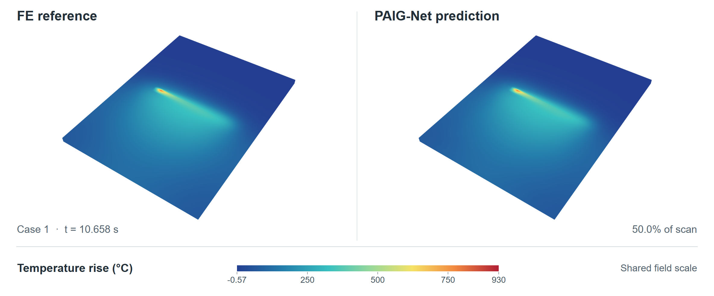
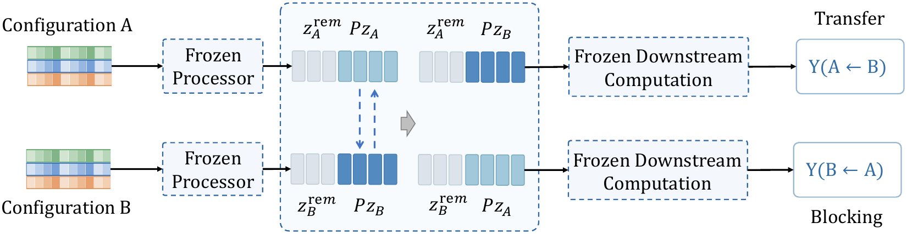
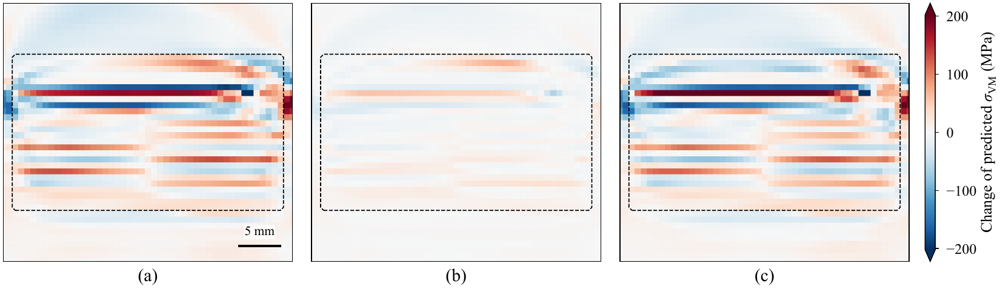

Thermomechanical field comparison
Follow the same laser scan in the Abaqus reference and the PAIG-Net prediction.

C2-117 preview · frame 60 of 120. Watch the animation directly

Data, timing and colour scales
The five examples have the lowest mean rank across temperature-rise, equivalent-strain and von Mises stress WAPE among ten dense-time cases. Each field’s WAPE pools all volume nodes and all 120 extraction records for one configuration.
Both views use the same mesh, camera and colour scale for the selected field. Each frame shows its stored solver time. Switching fields selects the nearest available scan progress on that field’s clock.
Model architecture
The thermal pathway predicts temperature rise. Its features condition the mechanical pathway, which predicts strains and reconstructs stress from elastic strain.

Physics audit
Paired representation exchanges test how a change in process conditions propagates through selected components of the hidden state.

Which strain information carries the stress response?
For this process-change pair, transferring the elastic-strain-tensor subspace reproduces the original model’s change in von Mises stress more closely than transferring the scalar strain subspace.
